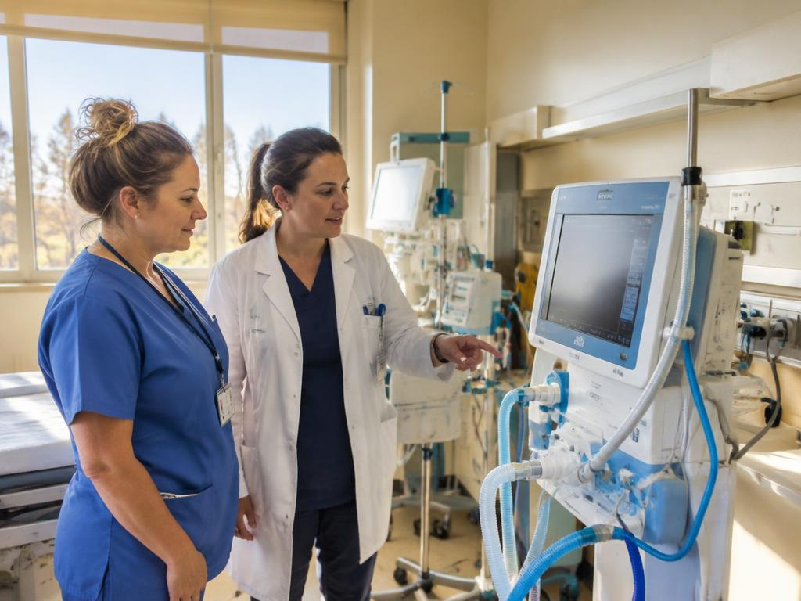
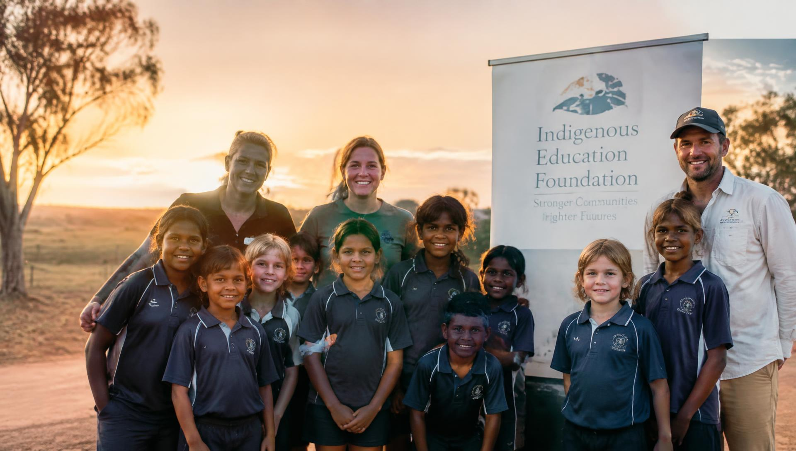
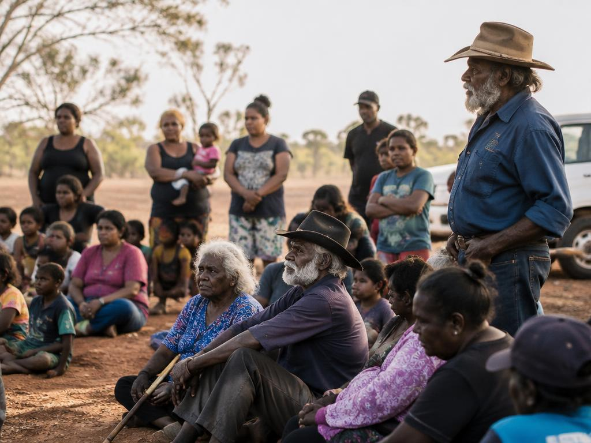
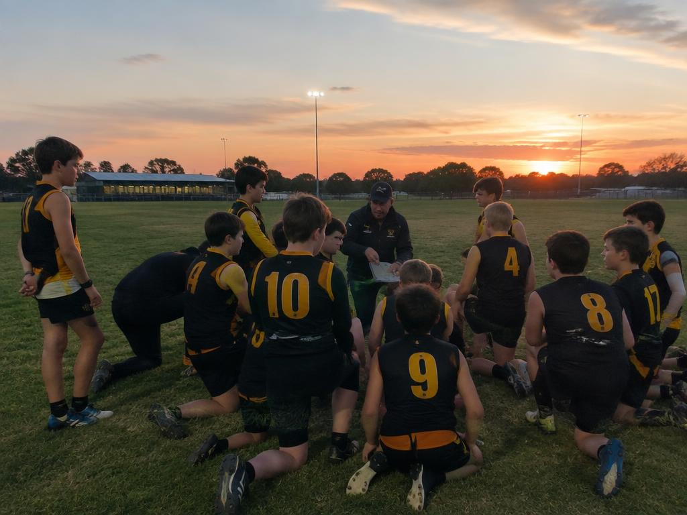
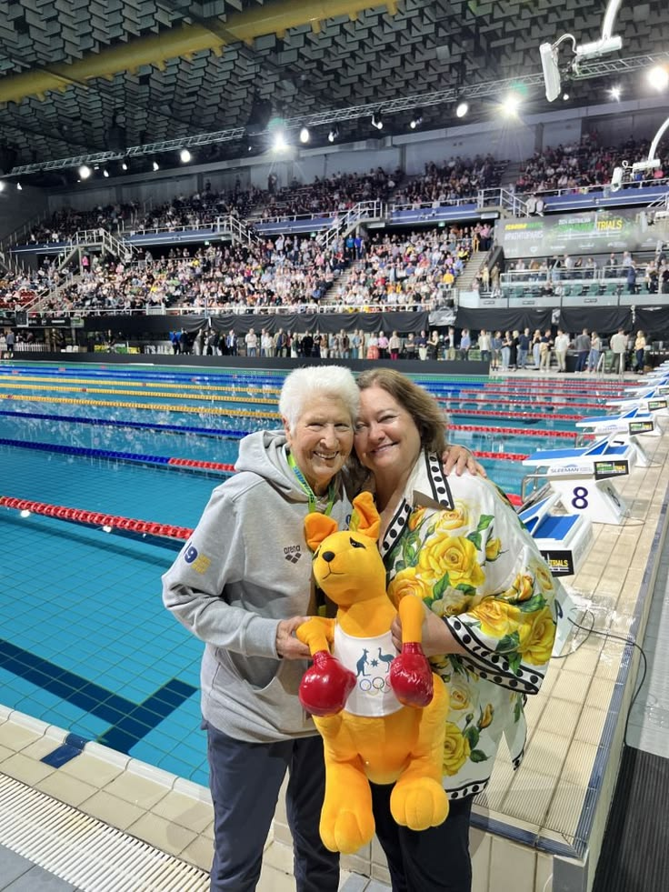

Salud y Bienestar
Equipamiento para hospitales comarcales, traslados médicos de emergencia en zonas aisladas e investigación médica aplicada.
Saber más →
Fundación Filantrópica
Como brazo filantrópico del grupo Hancock Prospecting, la fundación financia proyectos de salud, educación, desarrollo comunitario y deporte de alto rendimiento.
Acompañamos a familias, asociaciones civiles, centros educativos, hospitales comarcales y clubes deportivos que actúan sobre el terreno. Cada solicitud es analizada por nuestro comité, con una exigencia permanente de transparencia e impacto real medible.

Equipamiento para hospitales comarcales, traslados médicos de emergencia en zonas aisladas e investigación médica aplicada.
Saber más →Becas de excelencia, material educativo de última generación e internados para jóvenes de zonas rurales.
Saber más →
Programas de empleo local, preservación de lenguas y culturas aborígenes, vivienda e infraestructuras básicas.
Saber más →
Apoyo a clubes deportivos comarcales, atletas de élite mundial y programas de reinserción para veteranos.
Saber más →
Gina Rinehart y Hancock Prospecting premian directamente a los medallistas olímpicos, paralímpicos y mundiales (natación, remo, voleibol) para reconocer su esfuerzo y patriotismo.
Leer noticia →Un espectáculo de drones y luminotecnia extraordinario ofrecido por Hancock Prospecting a orillas de Perth, congregando a decenas de miles de familias.
Leer noticia →
Sesenta jóvenes procedentes de zonas rurales aisladas recibieron su beca anual para costear matrícula, transporte y alojamiento universitario.
Leer noticia →Complete el formulario oficial de solicitud: su expediente será transmitido directamente al equipo de la fundación a través de WhatsApp.
Presentar una solicitud